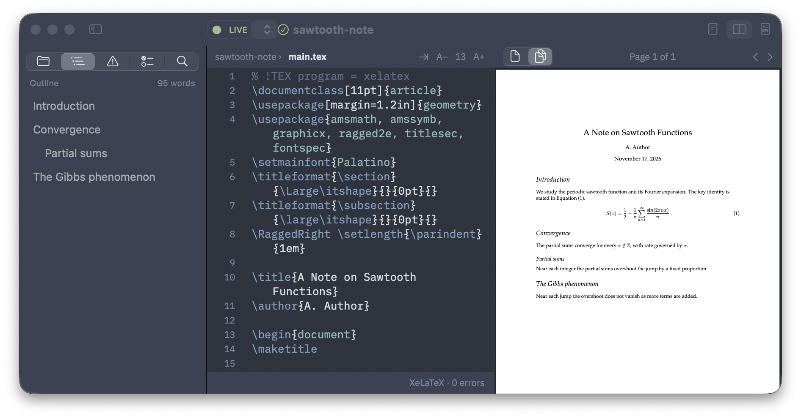

Native macOS app · Free
Write LaTeX on the left.
Watch the PDF
on the right.
A small LaTeX editor for the Mac. The PDF rebuilds a moment after you stop typing, using the LaTeX you already have installed. No account, no subscription.
macOS 14 or later · Apple Silicon · needs MacTeX · Free
Why LaTeX Writer
I wanted a Mac editor that opens fast, shows the PDF next to the source, and stays out of the way. I built this for my own use and I'm sharing it in case it's useful to someone else.
-
It uses your LaTeX
It runs the MacTeX already on your Mac through latexmk, with pdfLaTeX, XeLaTeX or LuaLaTeX. Your packages and fonts work the way they do in the terminal.
-
The PDF keeps up
Stop typing and the preview rebuilds, keeping your place. Errors show in a list and on the line that caused them.
-
A project is a folder
Open any folder of .tex files. Chapters pulled in with \input build through the main file, and build clutter stays in a hidden folder.
-
Help while you type
Labels and citation keys complete as you type. Command-click a spot in the PDF to jump to its source line.
A Look at the App
Three panes: files, outline, issues and search on the left, your source in the middle, the typeset PDF on the right.

Install in Three Steps
You need MacTeX installed first. This build is signed ad-hoc (not notarized), so macOS blocks it on first launch. You clear that once.
-
Download the DMG
Grab
LaTeX-Writer-<version>.dmgfrom the latest release. -
Drag to Applications
Open the DMG and drag
LaTeX Writer.appinto yourApplicationsfolder. -
Open Anyway
Try to open the app once. Then go to System Settings → Privacy & Security and click Open Anyway.
Free · macOS 14+ · Apple Silicon · GPL-3.0
Deliberately Simple
It does what I need for papers, posts and slides, and not much more.
-
No TeX engine inside
The app does not ship its own LaTeX. It needs MacTeX, and it builds exactly what your terminal would.
-
Plain files, saved as you go
Your .tex files stay ordinary files in your folder. The app saves them a moment after you stop typing.
-
A few things it skips
No code folding, no Markdown, and no built-in AI. Templates are plain .tex files you save yourself.